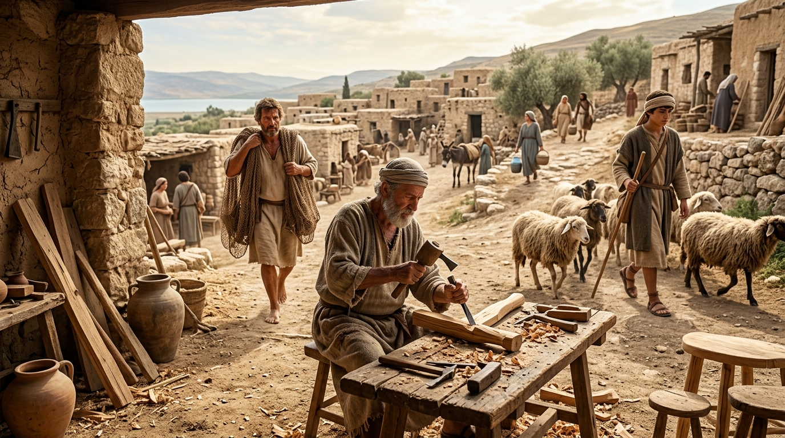

O Trabalho Árduo que Inspirou o Reino de Deus
A Bíblia não foi escrita num vácuo filosófico, nem foi redigida para uma elite ociosa que passava os dias debatendo ideias em palácios de mármore. O texto sagrado foi forjado na poeira das estradas, no suor do campo e no cheiro forte do mar. No antigo Oriente Médio e na Israel do primeiro século, a sobrevivência dependia do esforço braçal implacável.
Foi exatamente no meio dessa rotina exaustiva que Jesus de Nazaré encontrou as metáforas mais poderosas para explicar o Reino dos Céus. Ele não usou linguagem teológica complexa para confundir os sábios; Ele falou a língua dos barcos, das sementes, das pedras de construção e dos rebanhos. Compreender a realidade brutal destas profissões é a chave para sentirmos o peso, o impacto e a beleza revolucionária dos ensinamentos de Cristo.
Índice do Estudo:
- 1. Pescadores: A Indústria Pesada da Galileia
- 2. Agricultores: A Absoluta Dependência dos Céus
- 3. Pastores de Ovelhas: Guardiões Marginalizados
- 4. O Tekton: O Construtor de Pedras e Madeiras
- 5. Os Publicanos: O Estigma da Traição Nacional
- 6. Tabela de Resumo e Aplicação Prática
1. Pescadores: A Indústria Pesada da Galileia
Muitas vezes imaginamos os apóstolos como homens tranquilos sentados à beira de um lago com uma vara de pescar. A realidade era muito mais dura. A pesca no Mar da Galileia era uma indústria pesada, malcheirosa, extenuante e perigosa, devido às tempestades repentinas que desciam do Monte Hermom.
Homens como Pedro, André, Tiago e João trabalhavam predominantemente à noite, lançando pesadas redes de arrasto ou tarrafas feitas de linho (se pescassem de dia, os peixes veriam as redes grossas na água clara). Durante o dia, sob o sol escaldante, eles precisavam lavar, consertar e secar essas redes para evitar que apodrecessem. Além do esforço físico, sofriam sob o jugo do Império Romano e do tetrarca Herodes Antipas, que cobravam impostos altíssimos sobre os barcos, as licenças de pesca e o peixe salgado exportado.
Quando Jesus chama esses homens endurecidos e oprimidos e diz: "Vinde após mim, e eu vos farei pescadores de homens" (Mateus 4:19), Ele está convocando trabalhadores rústicos e resilientes para lançar a rede do Evangelho no mar agitado das nações, resgatando pessoas do abismo do pecado para o barco da salvação.
2. Agricultores: A Absoluta Dependência dos Céus
A economia de Israel era essencialmente agrária, mas a terra de Canaã não era fácil de cultivar. Diferente do Egito, que dependia da inundação previsível do Rio Nilo, Israel é uma terra rochosa, cheia de montanhas calcárias. O agricultor israelita dependia desesperadamente da chuva para sobreviver: a chuva "temporã" (no outono, para amolecer a terra para o plantio) e a "serôdia" (na primavera, para amadurecer a colheita). Sem elas, haveria fome brutal.
O trabalho envolvia arar o solo duro com juntas de bois, retirar pedras manualmente e construir terraços nas encostas das montanhas. É por causa dessa vulnerabilidade diária que Jesus utilizou tantas parábolas agrícolas. O Semeador que lança a semente em quatro tipos de solo (Mateus 13), o joio crescendo no meio do trigo, e a videira que precisa ser podada com a faca dolorosa do Agricultor (João 15) não eram ilustrações abstratas. Eram a vida nua e crua de sobrevivência dos ouvintes.
3. Pastores de Ovelhas: Guardiões Marginalizados
Embora os maiores heróis de Israel tenham sido pastores (Abraão, Moisés, Davi), no primeiro século a profissão havia caído em profundo descrédito. A elite religiosa urbana de Jerusalém via os pastores com desdém. Como passavam meses a fio nos campos com os animais, eles ficavam cerimonialmente impuros, não guardavam o rigor do sábado rabínico e frequentemente eram acusados de pastar seus rebanhos em terras alheias. Seu testemunho sequer era aceito nos tribunais judaicos. Eram os "marginalizados" da sociedade.
A ironia divina é magnífica: quando o Cordeiro de Deus nasceu em Belém, a primeira plateia convidada pelos anjos para a festa não foram os sacerdotes de vestes finas, mas os rudes pastores que guardavam o rebanho noturno (Lucas 2:8). Mais tarde, quando Jesus diz "Eu sou o bom Pastor; o bom Pastor dá a vida pelas ovelhas" (João 10:11), Ele se identifica com o trabalhador que dorme na terra fria, que exala o cheiro do rebanho e que luta até a morte contra lobos e leões para não perder uma única ovelha.
4. O Tekton: O Construtor de Pedras e Madeiras
Na nossa tradição, Jesus é conhecido como o "carpinteiro". No entanto, a palavra grega usada em Marcos 6:3 é Tekton. Embora envolva carpintaria (fazer móveis, portas, cangas e arados), um Tekton no primeiro século era primariamente um artesão da construção civil, um pedreiro ou mestre de obras. Israel tinha poucas florestas de grande porte; as casas eram feitas de pedra.
A poucos quilômetros de Nazaré, Herodes Antipas estava reconstruindo a magnífica cidade de Séforis. É altamente provável que José e Jesus tenham caminhado horas todos os dias para trabalhar naquelas pedreiras e construções. O Rei do Universo viveu quase 30 anos com as mãos calejadas, os músculos doloridos, sentindo o peso da pedra e o pó nos pulmões. Quando Jesus fala sobre construir a casa sobre a rocha ao invés da areia (Mateus 7:24), Ele está falando com a autoridade de um engenheiro civil experiente que sabia o que era alicerce.
5. Os Publicanos: O Estigma da Traição Nacional
Nenhuma profissão era mais odiada do que a de publicano (coletor de impostos). O Império Romano terceirizava a cobrança de impostos para moradores locais. O publicano pagava uma cota antecipada a Roma e tinha o direito de extorquir quanto quisesse do próprio povo para lucrar. Para um judeu, o publicano era pior que um ladrão; era um traidor da pátria, um colaborador do império pagão que oprimia Israel. Eles eram expulsos das sinagogas.
Foi por isso que a sociedade entrou em choque quando Jesus parou na alfândega de Cafarnaum e chamou Levi (Mateus) para ser seu apóstolo íntimo (Lucas 5:27), ou quando decidiu jantar na casa de Zaqueu, o chefe dos publicanos em Jericó (Lucas 19). Jesus demonstrou que a graça do Reino de Deus era forte o suficiente para alcançar até mesmo os profissionais mais corruptos e transformá-los em autores do Evangelho e heróis da fé.
6. Tabela de Resumo e Aplicação Prática
| A Profissão | A Realidade no 1º Século | A Metáfora de Jesus (O Reino) |
|---|---|---|
| Pescador | Trabalho noturno pesado; alta tributação e perigo constante. | Resgatar almas do mar da perdição; a rede lançada que puxa bons e maus. |
| Agricultor | Dependência total da chuva; luta contra solo rochoso e espinhos. | O coração humano como o solo que recebe a Semente da Palavra de Deus. |
| Pastor | Marginalizado pela religião; vida solitária e protetora no campo. | Jesus, o Bom Pastor que busca a ovelha perdida e dá a vida por ela. |
| Tekton (Construtor) | Artesão braçal de pedra e madeira; a própria profissão de Jesus. | A importância de cavar fundo e construir a vida sobre a Rocha (A Palavra). |
💡 Aplicação Prática: O que aprendemos hoje?
O estudo das profissões bíblicas nos ensina uma verdade gloriosa: Deus honra o trabalho árduo e cotidiano. Quando Jesus encarnou, Ele não escolheu nascer como um príncipe no palácio de Herodes, nem como um Sumo Sacerdote no Templo. Ele passou a esmagadora maioria de sua vida terrena não pregando ou fazendo milagres, mas serrando madeira, carregando pedras e pagando impostos. O trabalho não é um castigo; é uma vocação divina.
Além disso, quando chegou a hora de transformar o mundo, Jesus não foi às universidades recrutar os mais brilhantes filósofos; Ele foi às margens do lago recrutar trabalhadores exaustos. Ele chamou pescadores agressivos, pastores invisíveis e cobradores de impostos odiados. O que isso significa para nós hoje? Significa que a sua profissão não é um obstáculo para servir a Deus; ela é a sua plataforma. Seja você um motorista, um pedreiro, um professor, um médico ou um empresário, o Senhor quer transformar a sua "rede de pesca" e a sua "mesa de impostos" em um púlpito para anunciar que o Reino de Deus chegou.
Continue sua jornada:
- Voltar ⬅️ Índice de Cultura Judaica
- Temas 📚 Ver todos os estudos
Apoie este projeto 🌱
Se este estudo foi útil, considere apoiar a manutenção do site.
Chave PIX (Celular):
marcosmontanaria@gmail.com